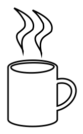
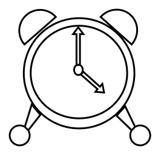

Custom Shapes
Paint.NET's Shapes tool supports Custom Shapes as a form of declarative plugin - code is not involved! The object model is intentionally identical to WPF geometry, with only a few caveats, and is compatible with XAML files created for WPF as long as you change the namespace and wrap the geometry object in a SimpleGeometryShape element.
The object model for Custom Shapes is contained in the PaintDotNet.Shapes and PaintDotNet.UI.Media namespaces.
Links:
- Installing Additional Plugins - Paint.NET Documentation
- Plugins - Shapes section of the Paint.NET forum. Download custom shapes plugins.
- How to make custom shapes tutorial by BoltBait
- ShapeMaker plugin by The Dwarf Horde
Differences from WPF Geometry
While the Custom Shapes object model is essentially identical to WPF's Geometry object model, there are a few differences:
Added:
- PolyCurveSegment
- This is a PathSegment that draws a curve going through each given point. Also known as a spline.
- These can be used within a PathGeometry, similar to PolyLineSegment or PolyBezierSegment.
- FlattenedGeometry
- This is a declarative equivalent to the imperative Geometry.GetFlattenedPathGeometry (WPF) or IGeometry.Simplify (Direct2D) methods.
- It is primarily useful for increasing the tesellation resolution of curves that, for whatever reason, appear "too pointy". This happens when Direct2D does not use enough line segments to approximate a curve.
- You could also use this to reduce tessellation resolution, forcing a curve to appear "low-res" or "pointy." (use a value larger than 1 for the FlatteningTolerance property).
- This is used by the built-in Ellipse shape to improve its rendering quality (a very low flattening tolerance of 0.0001 is used).
- OutlinedGeometry
- This is a declarative equivalent to the imperative Geometry.GetOutlinedPathGeometry (WPF) or IGeometry.Outline (Direct2D) methods.
- WidenedGeometry
- This is a declarative equivalent to the imperative Geometry.GetWidenedPathGeometry (WPF) or IGeometry.Widen (Direct2D) methods.
- Widening is often referred to as "stroking." You can use this to create the 2-dimensional stroked outline of a 1-dimensional line or curve.
Removed:
- StreamGeometry does not exist
StreamGeometryis primarily used in code, not in XAML, and does not exist for Custom Shapes.- You can, however, use Path Markup syntax to initialize any property of type Geometry.
- For example:
<SimpleGeometryShape Geometry="F1 M 21,142 L 160,22 L 300,142 L 300,318 L 21,318 Z" />
Examples
There are two primary ways of expressing a custom shape. The first is with Path Markup syntax, and the other is with the Geometry object model.
Path Markup syntax example
This is an example of a coffee mug shape defined using Path Markup syntax. This is part of TechnoRobbo's shapes pack.
<ps:SimpleGeometryShape xmlns="clr-namespace:PaintDotNet.UI.Media;assembly=PaintDotNet.Framework"
xmlns:ps="clr-namespace:PaintDotNet.Shapes;assembly=PaintDotNet.Framework"
DisplayName="Mug"
Geometry="M 68,106 A 6.74,23.82,90,1,1,150.5,106 L 150.5,126 A 20.51,15.15,149.74,1,1,150.5,178.5 L 150.5,193.5 A 6.73,23.81,-90,1,1,68,193.5 L 68,106 M 73,106 A 4.03,20.96,89.29,1,1,145,105 A 6.8,24.52,-91.12,1,1,73,106 M 150.5,133.5 A 22.12,15.15,150.46,1,1,150.5,171 L 150.5,133.5 M 109,10.5 C 114.86,15.45,120,20.5,127,33,128.5,42.5,127.5,43,117.5,51,105.5,59.5,124.66,76.88,124,83.5,117,53.5,132,55.5,140.5,46,147.5,28,119.5,15,109,10.5 M 78,7 C 83.86,11.95,89,17,96,29.5,97.5,39,96.5,39.5,86.5,47.5,74.5,56,93.66,73.38,93,80,86,50,101,52,109.5,42.5,116.5,24.5,88.5,11.5,78,7
"/>

Geometry object model example
This is an example of a clock shape defined using the Geometry object model. This is part of TechnoRobbo's shapes pack.
<ps:SimpleGeometryShape xmlns="clr-namespace:PaintDotNet.UI.Media;assembly=PaintDotNet.Framework"
xmlns:ps="clr-namespace:PaintDotNet.Shapes;assembly=PaintDotNet.Framework"
DisplayName="Clock">
<GeometryGroup FillRule="EvenOdd">
<PathGeometry>
<PathFigure IsClosed="False" IsFilled="True" StartPoint="87,254">
<ArcSegment Size="160,160" RotationAngle="0" IsLargeArc="True" SweepDirection="CounterClockwise" Point="408,254" />
</PathFigure>
<PathFigure IsClosed="False" IsFilled="True" StartPoint="87,254">
<ArcSegment Size="160,160" RotationAngle="0" IsLargeArc="True" SweepDirection="Clockwise" Point="408,254" />
</PathFigure>
<PathFigure IsClosed="False" IsFilled="True" StartPoint="107,254">
<ArcSegment Size="88,89" RotationAngle="87" IsLargeArc="True" SweepDirection="Clockwise" Point="387,254" />
<ArcSegment Size="75,80" RotationAngle="-89" IsLargeArc="True" SweepDirection="Clockwise" Point="107,254" />
</PathFigure>
<PathFigure IsClosed="True" IsFilled="True" StartPoint="310,90">
<ArcSegment Size="34,33" RotationAngle="130" IsLargeArc="True" SweepDirection="Clockwise" Point="400,170" />
<LineSegment Point="310,90" />
</PathFigure>
<PathFigure IsClosed="True" IsFilled="True" StartPoint="180,90">
<ArcSegment Size="34,34" RotationAngle="48" IsLargeArc="True" SweepDirection="CounterClockwise" Point="89,170" />
<LineSegment Point="180,90" />
</PathFigure>
<PathFigure IsClosed="False" IsFilled="True" StartPoint="90,410">
<ArcSegment Size="29,29" RotationAngle="147" IsLargeArc="True" SweepDirection="CounterClockwise" Point="100,420" />
</PathFigure>
<PathFigure IsClosed="False" IsFilled="True" StartPoint="410,410">
<ArcSegment Size="29,29" RotationAngle="29" IsLargeArc="True" SweepDirection="Clockwise" Point="400,420" />
</PathFigure>
<PathFigure IsClosed="True" IsFilled="True" StartPoint="240,230">
<LineSegment Point="240,140" />
<LineSegment Point="230,140" />
<LineSegment Point="245,120" />
<LineSegment Point="260,140" />
<LineSegment Point="250,140" />
<LineSegment Point="250,230" />
<LineSegment Point="240,230" />
</PathFigure>
<PathFigure IsClosed="False" IsFilled="True" StartPoint="233,244">
<ArcSegment Size="10,12" RotationAngle="0" IsLargeArc="True" SweepDirection="CounterClockwise" Point="258,244" />
</PathFigure>
<PathFigure IsClosed="False" IsFilled="True" StartPoint="233,244">
<ArcSegment Size="10,12" RotationAngle="0" IsLargeArc="True" SweepDirection="Clockwise" Point="258,244" />
</PathFigure>
<PathFigure IsClosed="True" IsFilled="True" StartPoint="260,250">
<LineSegment Point="308,293" />
<LineSegment Point="315,285" />
<LineSegment Point="320,310" />
<LineSegment Point="295,308" />
<LineSegment Point="301,300" />
<LineSegment Point="252,257" />
<LineSegment Point="260,250" />
</PathFigure>
<PathFigure IsClosed="True" IsFilled="True" StartPoint="110,345">
<LineSegment Point="135,375" />
<LineSegment Point="100,420" />
<LineSegment Point="90,410" />
<LineSegment Point="110,345" />
</PathFigure>
<PathFigure IsClosed="True" IsFilled="True" StartPoint="356.25,377.5">
<LineSegment Point="381.25,350" />
<LineSegment Point="410,410" />
<LineSegment Point="400,420" />
<LineSegment Point="356.25,377.5" />
</PathFigure>
</PathGeometry>
</GeometryGroup>
</ps:SimpleGeometryShape>
